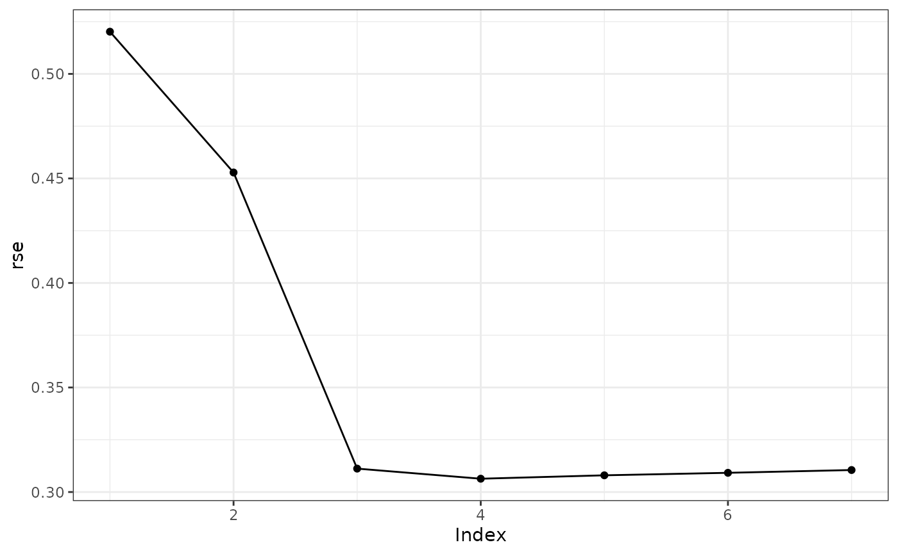

Summarize a Control Polygon Reduction Object
Usage
# S3 method for cpr_cpr
summary(object, ...)Value
a data.frame with the attribute elbow which is a
programmatic attempt to identify a useful trade-off between degrees of freedom
and fit statistic.
Examples
set.seed(42)
x <- seq(0 + 1/5000, 6 - 1/5000, length.out = 100)
bmat <- bsplines(x, iknots = c(1, 1.5, 2.3, 4, 4.5), bknots = c(0, 6))
theta <- matrix(c(1, 0, 3.5, 4.2, 3.7, -0.5, -0.7, 2, 1.5), ncol = 1)
DF <- data.frame(x = x, truth = as.numeric(bmat %*% theta))
DF$y <- as.numeric(bmat %*% theta + rnorm(nrow(bmat), sd = 0.3))
initial_cp <-
cp(y ~ bsplines(x, iknots = c(1, 1.5, 2.3, 3.0, 4, 4.5), bknots = c(0, 6))
, data = DF
, keep_fit = TRUE # default is FALSE
)
cpr0 <- cpr(initial_cp)
#>
|
| | 0%
|
|========== | 14%
|
|==================== | 29%
|
|============================== | 43%
|
|======================================== | 57%
|
|================================================== | 71%
|
|============================================================ | 86%
|
|======================================================================| 100%
s <- summary(cpr0)
s
#> dfs n_iknots iknots loglik rss rse wiggle fdsc
#> 1 4 0 -74.49596 25.977023 0.5201865 46.88727 2
#> 2 5 1 4.5 -60.10762 19.481116 0.4528403 46.14794 2
#> 3 6 2 1, 4.5 -22.06652 9.103178 0.3111950 113.07351 4
#> 4 7 3 1, 3, 4.5 -19.96710 8.728863 0.3063637 99.28601 4
#> 5 8 4 1, 1.5, .... -19.95694 8.727089 0.3079930 95.78576 4
#> 6 9 5 1, 1.5, .... -19.79792 8.699377 0.3091885 92.01369 4
#> 7 10 6 1, 1.5, .... -19.67424 8.677886 0.3105172 87.35118 4
#> Pr(>w_(1))
#> 1 NA
#> 2 1.8203e-08
#> 3 < 2.22e-16
#> 4 9.6222e-05
#> 5 0.630871
#> 6 0.072342
#> 7 0.066713
#>
#> -------
#> Elbows (index of selected model):
#> loglik rss rse
#> quadratic 3 3 3
#> linear 3 3 3
plot(s, type = "rse")
